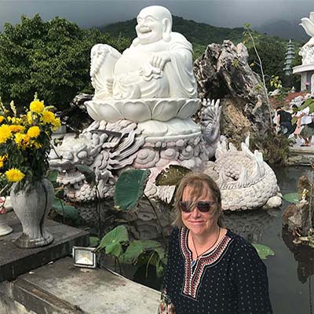
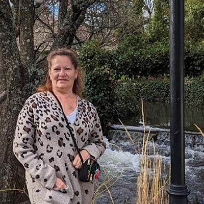
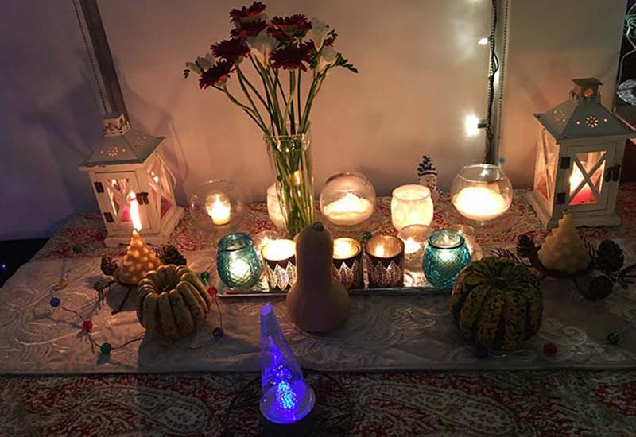

“{{quote}}“
{{author}}
I chose to become an active member of the end-of-life care movement for so many reasons. When I was at the bedside of my dying
brother, instead of feeling any sense of calmness or courage, I felt overwhelmed and useless - even scared of his anger.
I was horrified by his pain and felt utterly incapable of helping him. I wanted to be braver than that.
When I witnessed the indifference to my mother's care - the nurse assigned to her completely ignored her and was annoyed by my
mother's confusion and fear. When doctors would bristle at answering any of my questions related to her care. I wanted to be
a stronger advocate than that.
It was the experience of missing out on meaningful closure when I lost people in my childhood. Of not being allowed to attend
funerals. Of not being allowed to talk about the deceased in case it brought up too much pain. As if the pain wasn't already
right under the surface. I wanted to be able to acknowledge these people of my past.
I want to help families not miss out on their chance to be brave, to be a strong advocate and to acknowledge what their loved
one is going through.

I have been caring for the elderly, the infirm, young people with brain injuries and patients who have no support system. I
put my whole heart and soul into their care. Every success they achieve is a success I feel. This makes me the luckiest
person in the world.
It was upon hearing so many nightmarish stories from my client's families regarding the pain and helplessness they felt when
supporting their loved ones that I started looking for additional ways to help.
I met Karen and she introduced me to the whole Positive Death Movement that is sweeping the world. I felt like it was the
anchor I needed to expand on my health care practice. I consider myself a life long learner and there is no end to the
fascinating stories, trials and tribulations I hear from my clients.
It may not be for everyone, but for me there is nothing morbid about it. It is the opposite, it is about providing
the dying and their families with the knowledge and support to maintain their dignity and independence right to the very end.
Both Karen and Sarah are up to date with their Basic First Aid training. Both have been cleared by The Criminal Records Review
Program (CRRP) which completes vulnerable sector checks required by the Criminal Records Review Act. These checks protect children
and vulnerable adults.
We can assist you with a myriad of issues concerning end of life. You may be a young couple who has their will tucked away
but wants to make sure that anything should happen to them they have all their p's and q's dotted. You may be facing some
life threatening challenges and need help with advance care issues and paperwork you may not even know you need. We
can help in all those areas.
We also support you as a patient if you are going through end of life concerns. We are also there for the hard working
caregivers who likely need support and relief. We will, if asked, help negotiate or support the intricate dance that
happens between family members in times of crisis. And we will even water your plants and feed your dog. :)
Please contact us to set up an appointment. We provide long distance help via
Zoom or Google Meet but we also provide consultations at your home.

“There is no real ending. It's just the place where you stop the story.”
Frank Herbert